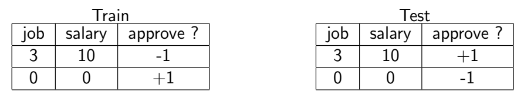

学习的可行性
“学习”是否可能
首先，我们必须明确在机器学习中，“学习”的真正含义是什么。它不是指“记忆”（memorizing），即把训练数据里的答案背下来。真正的“学习”是指“泛化”（generalization），也就是从已知的数据（训练集）中发现规律，并用这个规律去预测未知的数据（测试集）。
在没有任何假设的前提下，泛化是不可能的。
- 目标函数的未知性： 我们学习的目标，是想找到一个接近“真实规律”的函数，称为 (target function)。这个是客观存在的，但对我们来说是完全未知的。我们拥有的只是这个在某些特定输入点上的表现，也就是我们的训练数据集。我们永远无法看到的全貌。
- 训练数据与测试数据的潜在割裂： 既然我们看不到的全貌，我们就无法保证我们没见过的数据（测试数据）会遵循和训练数据一样的规律。例如下面的例子：
 这个例子非常极端但逻辑上完全可能。在真实的测试环境中，对于完全相同的输入，真实的规律（未知的）给出的答案可能与模型的预测完全相反。这意味着，你在训练集上学到的任何规律，对于测试集来说不仅无用，甚至是完全错误的。
因此，如果训练数据和测试数据背后的规律可以毫无关联，甚至是完全相反，那么我们从训练数据中学到的任何东西都对未来没有任何指导意义。在这种情况下，学习（泛化）是不可能的。
那么现实中的机器学习是如何学习到“泛化”的呢？下图是一个非常直观的例子。
- 有偏见的抽样 (Biased Sampling) 只从整个网络的一个特定区域进行采样，并作为训练数据。那么，基于这个有偏见的训练数据，训练出的模型会得出一个荒谬的结论“100%是橙色”。当这个模型被部署到真实的网络中去进行预测时，它会彻底失败。
- 无偏见的抽样 (Unbiased Sampling) 使用了一个公平的、随机的抽样方法，从网络中的各个部分都抽取了样本。基于这个样本训练出的模型，更有可能学习到关于这个网络“多彩”的真实规律，因此也更有可能在未来的测试中表现良好（泛化）。
独立同分布假设 (i.i.d.)
由此，我们引出两个至关重要的假设。
- 关联性假设：训练与测试数据独立同分布 (i.i.d.)我们必须打破“训练和测试数据毫无关联”这个最坏的设定，这需要一个假设来把它们联系起来，让训练与测试数据存在关联。i.i.d. 假设是机器学习的基石，基于这个假设，我们才有信心说，在训练集上学到的规律，在测试集上“应该”也同样适用。
- 同分布 (Identically Distributed)：假设训练数据和测试数据都来自于同一个未知的概率分布。这对应到机器学习中，就是假设我们的训练数据和测试数据都来自于同一个未知的“数据源池子”。例如，在手写数字识别中，我们假设训练时看到的“7”的写法风格分布，和未来测试时看到的“7”的写法风格分布，是基本一致的。游戏的规则没有变。
- 独立 (Independent)：它假设每个数据点的抽取过程是相互独立的，抽取一个样本不会影响下一个样本的抽取。这保证了我们的数据样本具有代表性。
- 目标修正：追求概率上的正确 (Probabilistic)，而非绝对的确定 (Deterministic)我们不再要求模型对每一个测试数据都做出100%正确的预测（deterministic prediction）。这是不现实的。这意味着我们的目标是学习一个模型，使得这个模型在未来的、未见过的数据上，犯错的概率很低。我们追求的是“大概率正确”，而不是“绝对正确”。这个思想后来发展成了统计学习理论的核心，比如PAC学习理论（Probably Approximately Correct，可能近似正确）。它的目标就是找到一个模型，能有很高的概率（Probably），使得模型的错误率很低（Approximately Correct）。
因此，机器学习并不是在毫无根据地进行预测，它建立在一个强大的统计假设（i.i.d.）和一个务实的目标（概率性预测）之上。
弹珠抽样的例子
例如，一个装有无数黄色和绿色弹珠的巨大罐子，我们无法看到罐子内部，但我们知道其中黄色弹珠的真实比例是。这个就是我们想要探知的“真实规律”。我们从罐中有放回地随机抽取个弹珠作为我们的样本（训练数据），这个抽样过程就是i.i.d.的。
“有放回”的抽样确保了每次抽取时，罐内黄绿弹珠的比例都是，即每次抽样都来自于同一个概率分布。
“随机”抽取保证了每个数据点的抽取过程是相互独立的，抽取一个样本不会影响下一个样本的抽取。
我们通过样本计算出黄色弹珠的比例为。是我们能观测到的值（如同模型在训练集上的错误率），而是我们想知道的真相（如同模型在真实世界中的错误率）。
那么，样本比例能否反映真实的比例？
- 从“绝对确定”的角度看：不能。你完全有可能因为运气差，从一个90%都是黄球的罐子里（），碰巧抽出的10个球全是绿的（）。如果追求100%的保证，那么样本毫无价值。
- 从“概率”的角度看：可以。上述“运气差”的情况虽然可能 (possible)，但其发生的概率极低，是极不可能的 (improbable)。统计学的大数定律告诉我们，当样本量足够大时，我们观测到的样本比例会以非常高的概率接近真实的比例。
也就是说，我们承认学习有可能会失败（抽到糟糕的样本），但我们相信并可以证明，失败只是一个小概率事件。因此，我们的目标是学习一个模型，使得这个模型在未来的、未见过的数据上，犯错的概率很低。
那么我们如何衡量这种犯错的概率？这需要借助概率论中的不等式来精确描述。
“学习”的概率衡量
以前面的弹珠抽样为例，首先，我们把问题用数学语言表达出来：
- 我们有一个未知的真实概率，代表桶中黄色弹珠的比例 ()。这在机器学习中相当于我们想要学习的未知的目标函数。
- 我们进行次独立重复抽样 (i.i.d.)。第次抽样的结果是一个随机变量，如果抽到黄色则，绿色则。
- 我们在样本中观测到的黄色弹珠比例是。这在机器学习中相当于模型在训练集上的表现（例如，训练误差）。
- 我们的核心问题是：样本比例在多大程度上能代表真实比例？换句话说，训练误差和真实 误差（在所有可能数据上的误差）有多接近？
我们关心的就是偏差。如果这个偏差很小，我们就说学习成功了。
子高斯集中不等式
假设有一个随机变量（例如，一次随机抛硬币的结果，一个随机选出的人的身高），我们如何量化和描述它的行为？
描述其行为的工具是概率密度函数 (probability density function, pdf)，记为。图中的钟形曲线就是一个高斯分布（正态分布）的概率密度函数。曲线下方面积为，某个区间上的面积代表落入该区间的概率。

我们可以通过计算概率来具体量化它的行为。，就是计算“随机变量的取值大于或等于某个值的概率”。这通常被称为尾部概率 (tail probability)，因为它衡量的是变量取到远离中心（均值）的“尾部”极端值的可能性。
通过前面的例子，我们发现高斯分布的尾部概率非常小，具体来说，变量取到远离其均值的极端值的概率非常非常小。具有这一类特性的分布被称为子高斯分布。
高斯分布和任何有界分布（即变量的取值范围在一个有限区间内，如）都属于子高斯分布。其随机变量被称为子高斯随机变量 (sub-Gaussian random variable)。
我们可以用一个不等式来衡量这个尾部概率。
子高斯集中不等式 (Sub-Gaussian Concentration Theorem)
其中，是一个子高斯随机变量，是我们关心的偏差大小，是一个正数。
不等式左边是一个尾部概率，表示“偏离其均值的距离超过”这一“坏事件”发生的概率。不等式右边是这个“坏事件”概率的一个上界。
这个上界随着的平方指数级衰减 (decays exponentially)。这意味着，当偏离均值很远（即很大），尾部概率会急剧下降，小到几乎不可能发生。这就是为什么它被称为“集中”不等式——它从数学上保证了随机变量的值会高度“集中”在其均值附近。
这是从另一个角度看的同一个不等式。它描述的是“好事件”的概率，即“的值落在以均值为中心，半径为的区间内”的概率。这个概率有一个下界，并且这个下界会随着的增大而迅速趋近于 。
接下来，将子高斯集中不等式（针对一个随机变量）推广到多个随机变量，就是霍夫丁不等式。
双边霍夫丁不等式
霍夫丁不等式 (Hoeffding's Inequality) 为我们提供了一个强有力的数学工具，来量化上述偏差发生的概率。对于有界随机变量，我们可以使用霍夫丁不等式的双边推论。
假设是一组独立的随机变量，其中每个都被限定在一个区间 内，其期望为。那么对于任何，它们的和偏离期望之和的概率满足：
这个公式是针对和 (sum) 的。在我们的弹珠例子中，我们更关心均值 (average)，也就是。我们可以通过简单的代数变换将它应用到均值上：
- 在弹珠例子中，每个的取值范围是，所以, ，因此 ，那么：
- 我们想知道的概率，代入和的定义，，这等价于，两边同乘，也就是。
- 将这个新的偏差值替换原始公式的，并化简，霍夫丁不等式可以写成：
由此，我们得到了针对均值的不等式
这个公式就是理解学习可行性的关键。让我们来详细解读这个最终公式。
- ：这代表一个“坏事件”的概率。这个坏事件就是我们的样本比例和真实比例之间的差距大于我们设定的容忍度。就是我们对“近似”的定义。
- ：这是“坏事件”发生概率的上界。这个上界会随着两个关键因素的变化而变化：
- (样本数量)：在负指数的位置上。当越大，指数部分就越负，整个上界就会急剧变小。这为“数据越多，模型越可靠”提供了数学保证。
- (容忍度)：也在负指数的位置上。如果我们想让误差范围变得更小（要求更精确），那么概率上界就会变大。这说明，要想达到更高的精度，就需要更大的样本量来抵消影响。
可能近似正确 (P.A.C.)
假设我们抽了n=500个弹珠，我们想知道样本比例和真实比例的差距大于t = 1/10 (0.1) 的概率是多少。代入公式：
这个结果告诉我们：当有500个样本时，我们测量到的比例偏离真实比例超过10%的概率不超过0.009%。这是一个极小的概率。
反过来看，这意味着“好事件”（即）发生的概率是至少，这是一个非常接近100%的概率。
这就引出了可能近似正确 (P.A.C.) 的概念：
- Probably（可能地）：我们有极高的概率（至少）相信我们的结论。
- Approximately Correct（近似正确）：我们的结论（样本比例）与真实情况（真实比例）的误差在可接受的范围之内。
这个理论框架将机器学习从一个“碰运气”的过程，变成了一个在概率上可以保证结果可靠性的科学过程。只要满足i.i.d.假设，我们就能用数学工具来确保学习是可行的。
泛化理论
数学描述
首先建立一套标准的数学符号，便于后续的讨论。
- ：这表示我们有一组个样本或数据点。每个都是一个输入（例如，一张图片、一条用户信息）。代表所有可能的输入构成的空间（输入空间）。
- ：这是与上述样本相对应的个标签。每个是对应的正确答案。这些标签是由一个我们未知的目标函数生成的。这个就是自然界中存在的、我们希望学习到的真实规律。
- ：这代表训练样本集，也就是我们用来训练模型的所有数据。
二元分类情况 (Binary case)：这里特指标签的取值为的情况。
- 代表假设空间 (Hypothesis Space)，它是所有备选模型（函数）的集合。学习的过程就是从中挑选出一个最好的函数。例子：感知机算法就是一个具体的例子。它的模型就是假设空间中的一个具体函数（或“假设”）。
误差度量 (Error Measure)
我们的目标是找到一个学习到的函数，使它尽可能地接近（）那个未知的真实规律。这与之前弹珠例子中，我们希望样本比例尽可能接近真实比例的思想是一致的。
为了衡量和的差距，我们首先定义在单个数据点上的误差。这个误差用函数表示，它衡量了模型预测值和真实值之间的差异。
- 平方误差 (squared error) ：。这种度量方式主要用于回归问题，因为预测值和真实值都是连续的数值。
- 二元误差 (binary error) ：。这里的是指示函数，当括号内的条件成立(即预测错误)时，函数值为1，否则为0。这种 0/1损失是专门为分类问题设计的。
学习与泛化
样本内误差 vs. 样本外误差
- 样本内误差 (In-sample Error, )给定一个训练集，样本内误差是模型在这个训练集上所有点误差的平均值。这衡量了模型在它“复习”过的题目上的表现。它也被称为训练误差 (training error)。
- 样本外误差 (Out-of-sample Error, )假设所有数据都遵循一个未知的概率分布，样本外误差是模型在整个数据分布上的期望误差。这衡量了模型在未来遇到的所有未知数据上的期望表现。这才是我们真正关心的指标，因为它反映了模型的泛化能力 (generalization)。注：样本外误差是一个比测试误差 (test error) 更为宏观和理论化的概念。测试误差是我们拿一个有限的、模型没见过的测试集来近似估算的结果。当测试集足够大且与训练集独立同分布时，这个估算会非常接近真实的。
总结：机器学习的理想目标是找到一个样本外误差尽可能小的模型。但我们无法直接计算或优化，因为我们不知道真实的和分布。
因此，我们只能通过最小化样本内误差来作为替代。而前面介绍的霍夫丁不等式等理论，正是为了建立起和之间的桥梁，保证当足够大时，会很接近，从而使我们的学习过程是可靠的。
记忆 vs. 学习 (Memorization vs learning)
- 记忆 (Memorization)：指模型仅仅通过死记硬背在训练数据上取得了很好的表现。这对应着很低的，但通常会导致很高的。这种情况在机器学习中被称为过拟合 (overfitting)。
- 学习 (Learning)：指模型学到了数据背后的通用规律，因此在新的、未见过的数据上也能表现出色。这对应着很低的，这种情况被称为泛化 (generalization)。
学习中的根本性权衡
- 泛化理论的目标就是探索样本外误差 (Eout) 与样本内误差 (Ein) 之间是如何关联的。这是因为是我们可以计算、检查并且直接最小化的指标。我们希望通过调整来间接地最小化。
- 我们可能会期望：只要样本内误差很小，那么样本外误差也应该会很小。如果这个直觉是真的，那么我们的任务就变得很简单：只需要选择一个非常复杂的模型（即一个非常大的假设空间），让它有足够的能力去完美拟合所有训练数据，使降为0。然而，这个直觉通常是不成立的。
为了理解为什么上述直觉是错的，我们可以将分解为两个部分：
这个公式告诉我们，要想让总的样本外误差变小，我们必须同时让训练误差和泛化误差都变小。
问题在于，减小这两项误差的手段是相互矛盾的：
- 在训练方面 (On the training side) ：为了让训练误差变小，我们需要一个更复杂的模 型（即更大的假设空间）。复杂的模型有更强的拟合能力，可以更好地学习训练数据中的细节。
- 在泛化方面 (On the generalization side) ：为了让泛化误差变小（即让模 型在训练集和测试集上的表现尽量一致），我们需要一个更简单的模型（即更小的假设空间 ）。简单的模型不容易过拟合，泛化能力更强。
后续，我们将通过严谨的数学描述，证明上述结论。
样本数量趋于无穷时的泛化保证
起点：和在期望上相等
对于一个固定的假设（模型），其样本内误差的期望值等于其样本外误差。
这里的期望是针对所有可能的、大小为的训练集而言的。
证明过程：
- 根据前文给出的公式，展开，将求和与常数提取到外部。
- 因为所有数据点都是从同一个分布中独立抽取的 (i.i.d.)，所以对任何一个求误差的期望，都等于对整个分布求误差的期望。
- 正是的定义。
这个结论说明是的一个无偏估计 (unbiased estimator)。这意味着，如果我们反复抽取很多不同的训练集，计算出的的平均值会精确地等于。
- 局限性：这是一个基于大数定律的渐进性 (asymptotic) 结论，它描述的是在样本数量趋于无穷时的理想情况。但在现实中，我们只有一个有限的训练集，那么就无法利用这个结论来判断和 的差异。
- 解决方案：我们需要一个非渐进性 (non-asymptotic) 的、在有限样本下依然成立的结论，这需要用到前面推导的集中不等式 (concentration inequalities)。
有限假设空间
为了在单个、有限的训练集的情况下，也能判断出和 的差异，或者提供一个概率保证。这里需要引入一个额外的假设——有限假设空间。
为了理论推导的简化，我们考虑的假设空间是有限的。
这意味着我们备选的模型（函数）数量是有限的。这在实践中可能不成立（例如线性回归模型有无数个），但它是构建更复杂理论的第一步。
对单个固定模型的泛化保证
引理 (Lemma) ：对固定的的高概率界
对于任意一个固定的假设，其和的偏差大于某个值的概率，会随着样本数量的增加而指数级下降。
这个不等式实际上就是我们之前讨论过的霍夫丁不等式 (Hoeffding's Inequality)，只不过这里的样本均值是，期望均值是。
- 这是一个非渐进性的界，它对任意大小的样本量都成立。
- 我们可以将它改写为等价形式：
- 这个式子的含义是：我们有非常高的概率（至少）保证，我们计算出的就是在真实的范围之内。
如何证明该不等式？它和之前使用的“双边”霍夫丁不等式的证明过程类似， 但是为了引出“联合界”的概念，这里使用了更基础的“单边”霍夫丁不等式来证明。
“单边”霍夫丁不等式：
证明：
- 分解问题：将双边的绝对值事件分解成两个单边事件和。
- 应用单边工具：
- 对第一个单边事件应用霍夫丁不等式，得到一个概率上界。
- 我们将随机变量定义为在单个数据点上的误差，即。对于二元分类，这个误差的取值要么是（预测正确），要么是（预测错误），所以其界限为。于是，。
- 我们关心的事件是。代入的定义，这等价于：
- 将这个事件代入单边霍夫丁不等式中（用替换公式中的），我们得到：
- 对第二个单边事件应用霍夫丁不等式（通过对称性），得到另一个概率上界（同样为）。
- 对第一个单边事件应用霍夫丁不等式，得到一个概率上界。
- 合并结果：使用联合界 (Union Bound) 来处理两个事件的“或者”关系。联合界表明，多个事件中至少一个发生的概率，不会超过它们各自概率的总和。因此，我们将两个单边界的概率上界相加，得到最终的双边界的概率上界：
接下来将上述的概率不等式，转化成一个关于误差边界的命题，使其更易于理解和应用。
我们让这个概率上界等于我们允许的“坏运气”概率，即。然后，我们从这个等式中反解出偏差：。将这个的表达式代回到高概率事件中，并稍作整理，得到以下泛化界。
对于一个固定的模型，以及任意给定的，我们有至少的概率，保证以下泛化界成立：
- ：代表我们允许的"环运气"的概率，通常是一个很小的数(如0.05)。
- ：代表我们的置信度 (confidence) （如95%）。
- 这个公式给了我们一个非常实用的结论：在很高的置信度下，我们未知的真实误差不会超过我们算出来的训练误差太多，其超出的部分有一个明确的上限。这个上限被称为泛化误差 (generalization error) 。
- 这个泛化误差会随着样本量的增大而减小，这与我们的直觉相符。
总结：我们证明了在“平均”意义上，是的一个好的估计。但是现实中我们只有一个样本，不能只看“平均”，因此必须要对这“单个”样本的可靠性给出保证。通过霍夫丁不等式，我们得到了这个保证：对于一个固定的模型，我们手上的确实很可能是的一个近似。
存在的问题
到这里为止，我们完成了吗？答案是没有。
然而，真实的机器学习过程是从一个包含许多可能模型的假设空间中，挑选出一个使最小的模型。当我们引入了“选择”这个动作后，遇到“坏数据”的概率就会增加，上述的泛化界也就不再成立。下一步的理论就是要解决这个问题，将泛化保证从“单个固定模型”推广到“从有限或无限模型中选择一个模型”的场景。
整个有限假设空间的泛化保证
将之前对单个固定模型的泛化保证，扩展到在整个有限假设空间，基于一个非常直接的思想：把单个模型的泛化误差上界，简单粗暴地乘以模型的总数量。
回到之前的霍夫丁不等式。它的意思是，对于假设空间中的任意一个固定的模型，它发生“坏事”（泛化误差超过）的概率有一个上限：
当我们要把这个不等式推广到整个假设空间内的所有模型，我们干脆假设所有模型发生“坏事”的概率都达到了这个上界，然后再使用“联合界”粗暴地把这些概率全部相加，由此得到一个非常宽松的上界。
然后，重复之前的操作，让这个概率上界等于我们允许的“坏运气”概率，即，解出，代回原式，可以得到下面定理。
定理 (Theorem) ：假设我们有一个有限的假设空间（即备选模型的数量是有限的）。对于任意给定的 ，我们有至少的概率，保证以下不等式对空间中的所有模型都成立：
公式解读与对比：
- 这个公式与我们之前针对单个固定模型的公式非常相似。唯一的区别在于对数项里面多了一个。
- 代表假设空间的基数 (cardinality)，也就是我们备选模型的总数量。它通常被看作是模型复杂度的一个度量。
- 这个新增的可以被理解为我们为“选择的自由”所付出的代价。因为我们有机会从更多的模型中进行选择，我们“碰巧”选到一个在训练集上表现好但在测试集上表现差的模型的风险也随之增加。这个公式量化了这一风险。
定理的三个重要启示：
- 对的依赖是对数级的。这意味着我们想让结论的置信度大幅提高（例如从95%到99.9%）,泛化误差项（公式的根号部分）的增长会非常缓慢，这是个好消息。
- 泛化误差会随着模型复杂度的增加而增加，但同样也是对数级的。这意味着我们可以使用一个复杂得多的模型类别 (例如从100增加到10000)，而泛化误差的惩罚项不会不成比例地暴增。
- 更多的样本（更大的）会带来更好的泛化能力。在分母的位置，它的增加会最有效地减小泛化误差，这再次印证了数据量的重要性。
权衡 (Trade-off)
上面的泛化定理，给出了我们在之前讨论过的“学习中的根本性权衡”一个清晰的数学表达。
为了最小化我们最终的目标，我们需要同时让和泛化误差是相互矛盾的：
- 在训练方面（On the training side）：为了得到一个足够低的，我们需要一个更复杂的假设空间（即更大的）。因为模型越多，选择范围越大，就越有可能找到一个能完美拟合训练数据的模型。
- 在泛化方面（On the generalization side）：为了得到一个足够低的泛化误差（根号项），我们需要一个更简单的假设空间（即更小的）。因为越小，为“选择”付出的代价就越小。
这揭示了模型选择的核心：我们必须在模型的拟合能力（由大的保证）和泛化能力（由小的保证）之间找到一个最佳的平衡点。
存在的问题
根据前面的推导过程，容易发现泛化界存在局限性。
- 问题一：在实践中通常是无限的
- 以最简单的一维线性模型为例，。由于参数可以取任何实数，这意味着我们有无穷多个可能的模型（即不同斜率的直线）。
- 如果我们将代入我们之前的泛化公式，按照之前利用“联合界”粗暴地全部加起来的思路，泛化误差项也会趋于无穷大，使得这个界变得毫无意义。这是该理论的一个致命缺陷。
- 问题二：联合界（Union Bound）可能过于粗糙
- 我们之前的证明是基于联合界的，但联合界是一个可能非常宽松（不精确）的估计。
- 以下面的维恩图为例，联合界通过简单地将所有事件的概率相加（）来估计它们的并集概率。然而，当这些事件高度重叠时，重叠部分被重复计算了很多次，导致估计值远大于真实的并集概率（）。因此得到的泛化界可能过于悲观。
- 我们需要找到一种更聪明的方式来度量假设空间的复杂性，而不是简单地数模型的总数。
💬 评论区